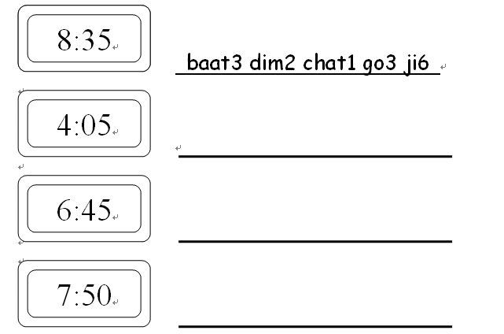
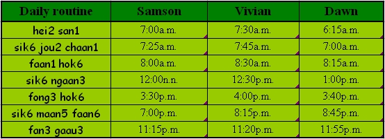

Unit 6 Time and Routine
Unit 6 Time and Routine 
Objectives
- To recognize and pronounce Cantonese words with the initials [d], [f], [g], [h], [j];.
- To recognize and pronounce Cantonese words with the finals [an], [aan], [am], [im], [ung];.
- To use simple Cantonese vocabulary and expressions in telling time and routine.
Warm up Work together.
- Can you tell your partner your mobile phone number?
- Can you also jot down your partner’s phone number? Write it in Chinese if you can.
Vocabulary
* In Cantonese, people tell the time by adding ‘dim2 jung1’ to the end of the hour number similar to the English ‘o’clock’.
e.g. one o’clock is ‘yat1 dim2 jung1’;
four o’clock is ‘sei3 dim2 jung1’
* For minutes past the hour, ‘dim2’ is added to the number of hour, ‘fan1’ is added to the number of minutes. ‘ling4’ is added before ‘fan1’ if the number of minutes is a single-digit number.
e.g. 4 minutes past one is ‘yat1 dim2 (ling4) sei3 fan1’
6 minutes past one is ‘yat1 dim2 (ling4) luk6 fan1’
14 minutes past one is ‘yat1 dim2 sap6 sei3 fan1’
* For the minutes that are multiples of five, like 5, 10, 15, 20 and so on, ‘dim2’ is added as described above. Then the number of minutes would be divided by five.
e.g. ‘twenty minutes past one’ would be ‘yat1 dim2 sei3 (20/5=4)’
‘twenty five minutes past one’ would be ‘yat1 dim2 ng5 (25/5=5)’
Another way to tell the minutes by units of five is put every five minutes as one ‘go3 ji6’.
e.g. ‘twenty minutes past one’ would be ‘yat1 dim2 sei3 go3 ji6’
twenty five minutes past one’ would be ‘yat1 dim2 ng5 go5 ji6’
* Half past the hour is referred to as ‘bun3’.
e.g. half past one is ‘yat1 dim2 bun3’
half past six is ‘luk6 dim2 bun3’
Exercises
Look at the time on the digital clocks and then tell the time using ‘… dim2 … go3 ji6’. First write out the answer and then read it aloud. The first one has been done for you.

Sentence structure
Asking Question – using the question word ‘gei2’ (S gei2 V)
What time do you get up?
你幾點鐘起身？
[nei5 gei2 dim2 jung1 hei2 san1?]
When do you go to bed at night?
你夜晚幾點瞓覺？
[nei5 ye6 maan5 gei2 dim2 fan3 gaau3?]
Conversation Practice with a partner.
Scene: Sally is talking to Linda about her daily routine.
Sally: Linda, What time do you usually get up?
Linda, 你通常幾點鐘起身？
[Linda, nei5 tung1 seung4 gei2 dim2 jung1 hei2 san1?]
Linda: I usually get up at twenty five minutes past seven in the morning.
我通常上晝七點五起身。
[ngo5 tung1 seung4 seung6 jau3 chat1 dim2 ng5 hei2 san1.]
Sally: When do you go to bed at night?
咁你夜晚幾點瞓覺呀？
[gam3 nei5 ye6 maan5 gei2 dim2 fan3 gaau3 a3?]
Linda: I usually sleep at half past eleven at night. How about you?
我夜晚通常十一點半瞓覺，你呢？
[ngo5 ye6 maan5 tung1 seung4 sap6 yat1 dim2 bun3 fan3 gaau3, nei5 ne1?]
Sally: I get up at a quarter past eight in the morning and go to sleep at a quarter to twelve at night.
我上晝八點三起身，夜晚十一點九瞓覺。
[ngo5 seung6 jau3 baat3 dim2 saam1 hei2 san1, ye6 maan5 sap6 yat1 dim2 gau2 fan3 gaau3.]
Kelvin: Can we have breakfast together tomorrow?
不如聽日一齊食早餐吖?
[bat1 yu4 ting1 yat6 yat1 chai4 sik6 jou2 chaan1 a1?]
Role-play Have conversations similar to the above conversation.
- Choose a partner and talk about your daily routine.
- Invite a partner to have breakfast (or do anything else you’d like to do).
Quiz
Read the following table and answer all the questions.

Questions:
a) Dawn gei2 dim2 jung1 fong3 hok6? Dawn 幾點鐘放學？
b) bin1 go3 jeui3 jou2 hei2 san1? 邊個最早起身？
c) bin1 go3 jeui3 chi4 fong3 hok6? 邊個最遲放學？